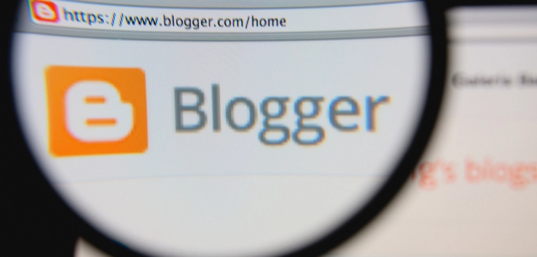
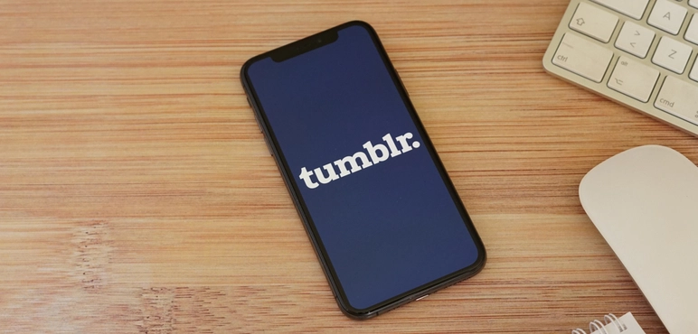

Blog açmak son dönemlerin en popüler aktivitelerinden birisi haline geldi. Günümüzde birçok kişi ise oldukça popüler hale gelen bu aktiviteye dahi olarak blogger olma yolunda ilerliyor. Genellikle bloggerlık yapan kişilerin ise ilk baştaki amaçlarının blog açarak para kazanmak olduğu görülse de bu amaç zamanla bir hobiye dönüşüyor ve hem gelir elde etmeye hem de fikirleri paylaşamaya olanak sağlıyor. Peki son dönemlerin en popüler şeylerinden biri diye bahsettiğimiz blog nedir, Blog Açmak İsteyenlerin Bilmesi Gereken Her Şey adlı bu yazımızda sizlere bloglar ile ilgili bilgi vereceğiz.
Weblog’un kısaltması olarak kullanılan blog, genellikle yazılı içeriklere odaklanmış bir internet sitesi türü olarak bilinmektedir. Blog yazarlığı yapan kişiler genellikle popüler kültür öğelerinin birçoğu hakkında yazılar yazabilmektedir. Bloglar genellikle 4 farklı kategoride değerlendirilen sitelerdir. Peki blog türleri nelerdir?
Özellikle e-ticaret ile uğraşan kişiler tarafından bloglara oldukça önem verilmedir. Blog kullanımının e-ticaretteki önemi hakkında bilgi bilgi almak için ilgili yazıyı okuyabilirsiniz.
İlgili içerik; Blog Kullanımının E-Ticaretteki Önemi
Blog yazmak istiyorsanız eğer bilmeniz gereken şeylerden birisi de bu alanda kullanılan sözcüklerin anlamlarıdır. Yazımızın üst bölümünde blog ne demek sorusuna bir yanıt verdik fakat diğer blog terimleri neler gelin bunlara hep beraber bakalım.
Blog açmak son dönemlerde oldukça popüler bir şey olduğu için Blog Açmak İsteyenlerin Bilmesi Gereken Her Şey yazımızın bu bölümünde ücretsiz blog açma platformları hakkında sizlere bilgiler vereceğiz. Blog açmak isteyenlerin bilmesi gereken şeylerden birisi özellikle ücretli blog açma siteleri olduğu gibi, ücretsiz blog açma sitelerinin olduğudur.
Blog açmak isteyen kişilerin en çok kullandığı blog servisidir. Dilediğiniz takdirde xxxxxx.wordpress.com gibi blog isimleri kullanarak blog açabileceğiniz gibi kendi domaininizi satın alarak da blog açabilirsiniz.
Google’ın ücretsiz blog açma servisidir. Dünya üzerinde blog açmak isteyen kişilerin en çok tercih ettiği blog servisleri arasında bulunmaktadır.
Genç nüfus tarafından oldukça çok tercih edilen blog servisi olan Tumblr üzerinden xxxxx.tumblr.com gibi blog isimleri ile kaydolabilir ve kendi bloğunuzu yaratabilirsiniz.
Blog Açmak İsteyenlerin Bilmesi Gereken Her Şey yazımızın bu bölümünde sizlere blog açarken nelere dikkat etmelisiniz, neleri göz önünde bulundurmalısınız bunlardan bahsedeceğiz.
Blog isimleri, bloğunuzun tanınmasını sağlayacak ilk unsurdur. Bu nedenle hangi aracı kullanarak blog açarsanız açın blog isminiz üzerinde oldukça düşünmeniz gerekmektedir. Blog isminde kendi isminizi kullanabileceğiniz gibi takma bir isim, sizin için önemli bir kelimeyi de seçerek bloğunuzu açabilirsiniz. Blog açmadan önce dilerseniz blog isim önerilerine de göz atabilir ve yeni fikirler edinebilirsiniz.
Blog ismini buldunuz, bir blog kurulumu gerçekleştirdiniz şimdi ise sırada logo tasarımı yapmak var. Bloğunuz için yapacağınız logo tasarımı daha çok akılda kalmanıza olanak sağlayacak ve insanlar tarafından hatırlanmanızı kolaylaştıracaktır. Bu nedenle sizler de logo tasarımı yaparak bu avantajlardan yararlanabilirsiniz. Logo tasarımı ile ilgili bilgi almak için Logo Tasarımı Nasıl Yapılır? 2021'in Ücretsiz En İyi Logo Programları adlı yazımızı okuyabilirsiniz.
İlgili içerik; Logo Tasarımı Nasıl Yapılır? 2021'in Ücretsiz En İyi Logo Programları